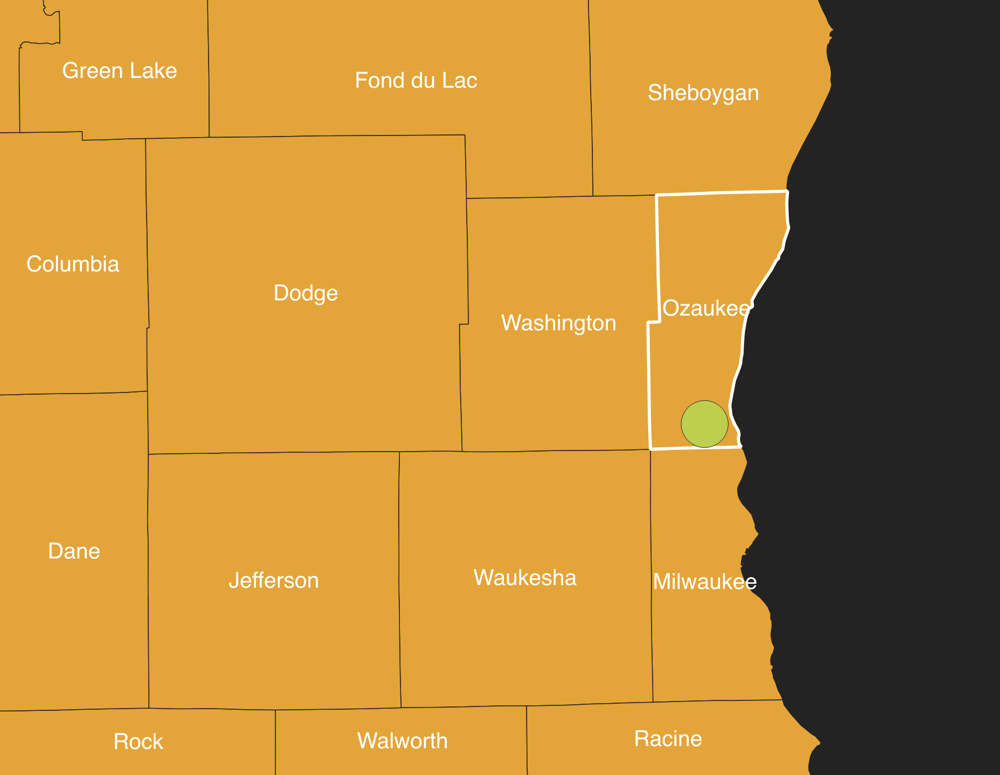
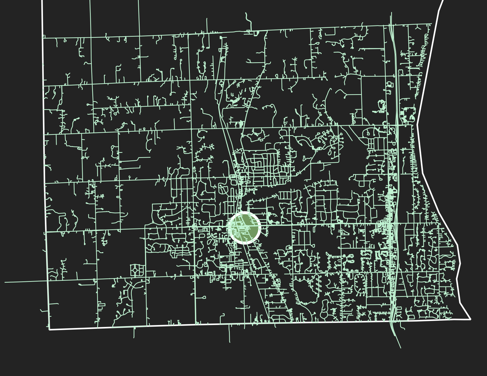

An intersection refers to the place where streets meet. It can also mean the meeting of needs and wants or the reconciliation of goals and realities. In each of these understandings, it forms the substrate on which change happens.
Like most places, the intersection is a palimpsest. Its temporal stratigraphy tells the story of how a virgin landscape served a population’s needs and in doing so was changed. In other words, an intersection is a place where the socio-spatial dialectic plays out.
This website is an exploration of a particular intersection, the meeting of Cedarburg Road and Mequon Road in Mequon, Wisconsin. It’s a cursory exploration of how space and people interact using principles of urban geography. It seeks to answer the question: "Does Mequon now have a center?" There is much more that could be done with this topic.
Summaries of several sources that guided my thinking are in the 'Literature Review' section at the end. Works referenced are in the 'References' section.
Several people and institutions were generous with their time helping me prepare this site. In particular, Robert Blazich and Barb Johnson at the Mequon-Thiensville Historical Society, Mike Hecker at the Ozaukee County Historical Society, and the UWM Archives Department. Photos are courtesy of Robert Blazich, the Mequon-Thiensville Historical Society, and the Ozaukee County Historical Society.
This website the final project for the Fall 2025 session of Geography 441, led by Dr. Anne Bonds, at the University of Wisconsin-Milwaukee.
Submitted by Greg Latsch
Context
Mequon, Wisconsin, is a city in the southern park of Ozaukee County. Thiensville is a village contained within Mequon.

The intersection of Cedarburg and Mequon Roads is in the south-central portion of Mequon.
